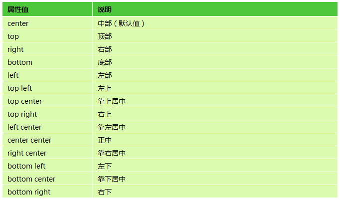
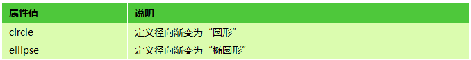
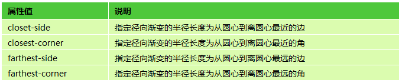
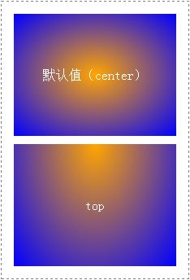
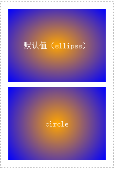
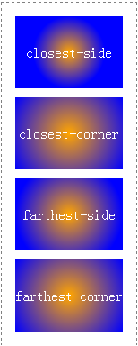
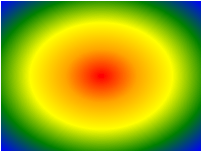
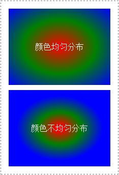

语法：
background:radial-gradient(position ,shape size,start-color,stop-color)
说明：
径向渐变是一种从起点到终点颜色从内到外进行圆形渐变（从中间向外拉，像圆一样），css3径向渐变是圆形或椭圆形渐变，颜色不再沿着一条直线，而是从一个起点向所有不同方向渐变
position：定义圆心位置；
shape size：由2个参数组成，shape定义形状（圆形或椭圆），size定义大小；
start-color：定义开始颜色值；
stop-color：定义结束颜色值；
position、shape size都是可选参数，如果省略，则表示该项参数采用默认值。大家要非常清楚这一点，不然这一节的代码你有可能看不懂。
start-color和stop-color为必选参数，并且径向渐变可以有多个颜色值。
(1) position

(2) 定义形状shape和定义大小size
shape参数取值

size参数取值(size主要用于定义径向渐变的结束形状大小。)

使用方法：
background:radial-gradient(orange,blue); /*由圆心橙色向外渐变成蓝色*/
兼容性：
- 浅绿 = 支持
- 红色 = 不支持
- 粉色 = 部分支持
| IE | Firefox | Chrome | Safari | Opera | iOS Safari | Android Browser | Android Chrome |
|---|---|---|---|---|---|---|---|
| 6.0-9.0 | 2.0-3.5 | 4.0-9.0 -webkit- #1 |
3.1-3.2 | 15.0+ | 3.2-4.3 -webkit- #1 |
2.1-3.0 -webkit- #1 |
10.0-25.0 -webkit- #1 |
| 10.0+ | 3.6-15.0 -moz- |
10.0-25.0 -webkit- |
4.0-5.0 -webkit- #1 |
5.0-6.1 | 4.0-4.3 -webkit- |
26.0+ | |
| 16.0+ | 26.0+ | 5.1-6.0 -webkit- |
7.0+ | 4.4+ | |||
| 6.1+ |
- 使用过时的语法：-webkit-gradient(radial,…)
事例：
(1)有position值
div{
width:200px;
height:150px;
line-height:150px;
text-align:center;
color:white;
}
#div1
{
margin-bottom:10px;
background:radial-gradient(orange,blue);
}
#div2
{
background:radial-gradient(top,orange,blue);
}

(2)有shape值
div{
width:200px;
height:150px;
line-height:150px;
text-align:center;
color:white;
}
#div1
{
margin-bottom:10px;
background:radial-gradient(orange,blue);
}
#div2
{
background:radial-gradient(circle,orange,blue);
}

(3)有size值
div{
width:200px;
height:150px;
line-height:150px;
text-align:center;
color:white;
}
#div1{background:-webkit-radial-gradient(circle closest-side,orange,blue);}
#div2{background:-webkit-radial-gradient(circle closest-corner,orange,blue);}
#div3{background:-webkit-radial-gradient(circle farthest-side,orange,blue);}
#div4{background:-webkit-radial-gradient(circle farthest-corner,orange,blue);}

(4)有多个颜色值
div{
width:200px;
height:150px;
background:-webkit-radial-gradient(red,orange,yellow,green,blue);
}

(5)不均匀的分布渐变
默认情况下，径向渐变颜色节点是均匀分布的，不过我们也可以为每一种颜色添加百分比，来使得各个颜色节点不均匀分布。
div{
width:200px;
height:150px;
line-height:150px;
text-align:center;
color:white;
}
#div1{background:-webkit-radial-gradient(red,green,blue);margin-bottom:10px;}
#div2{background:-webkit-radial-gradient(red 5%,green 30%,blue 60%);}
